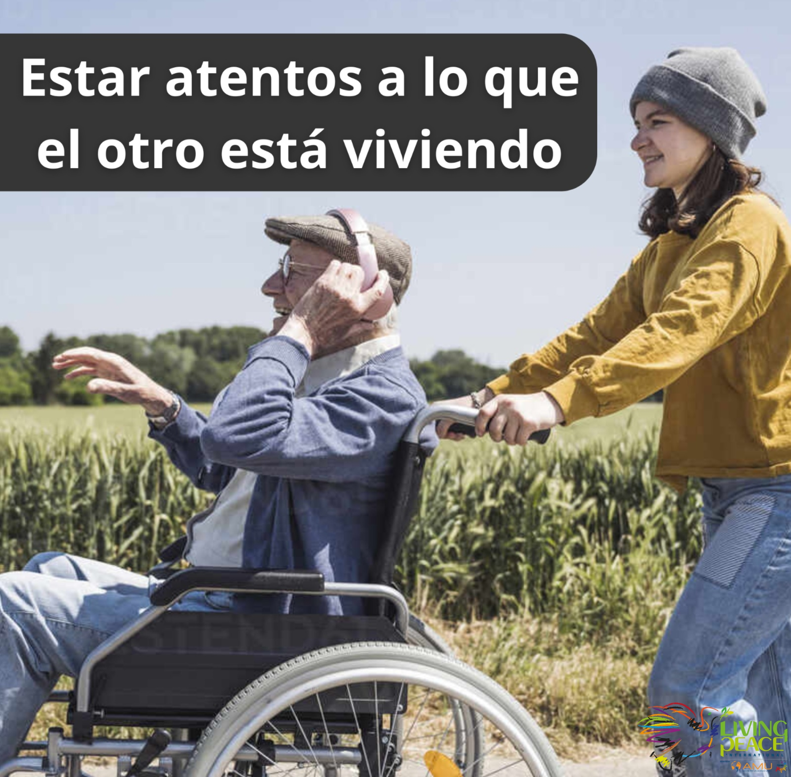
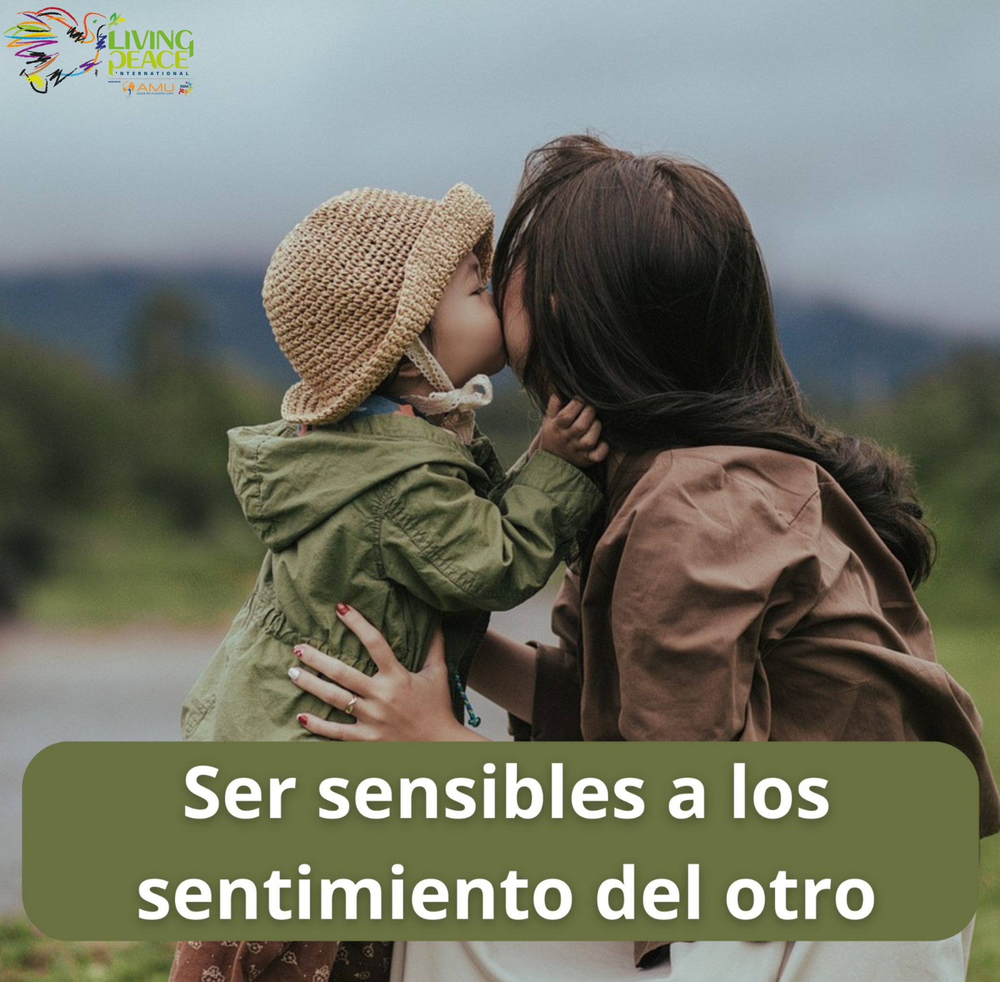
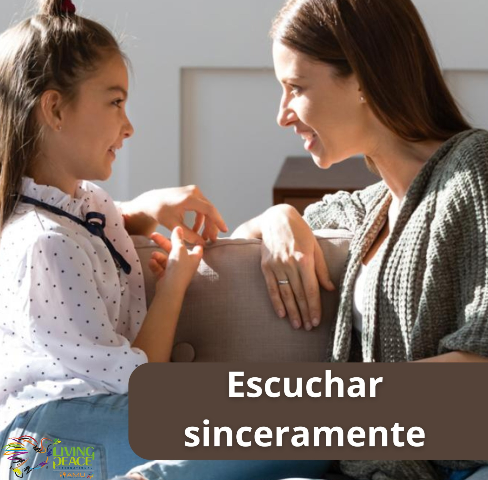
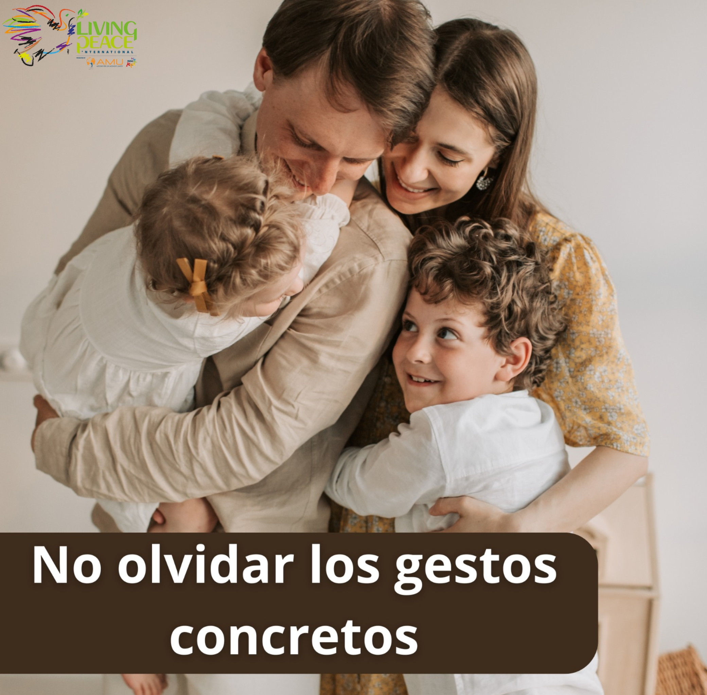

TU GESTO DE PAZ EN FAMILIA
Reavivar el amor familiar
Haz hoy algo que recuerde a tu familia que el amor se cuida con presencia, paciencia y detalles.
LA PAZ EMPIEZA EN CASA
Lanza el dado y descubre una acción concreta para cuidar la escucha, la ternura y el amor; porque la familia también puede ser escuela de paz.




Haz hoy algo que recuerde a tu familia que el amor se cuida con presencia, paciencia y detalles.
LAS SEIS CARAS
Pulsa una tarjeta para descubrir una acción sencilla.
“La familia crece cuando cada uno decide cuidar al otro con gestos concretos.”
Escuchar · Comprender · Cuidar